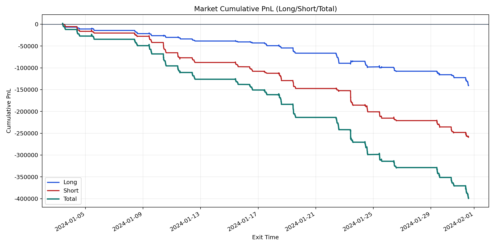
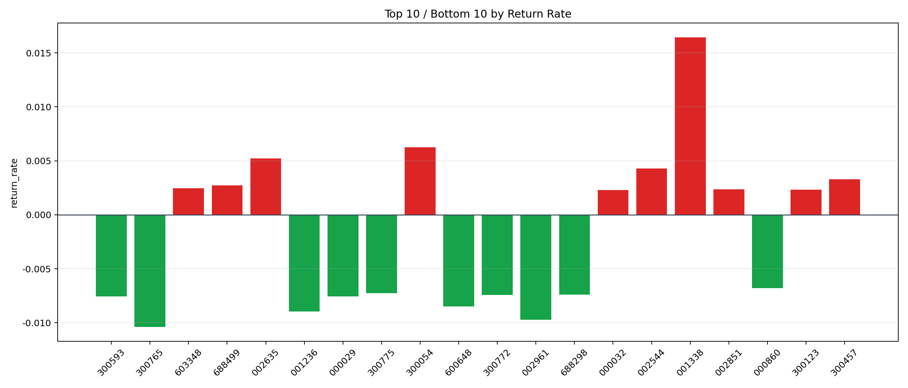

| repo_root | /home/haoranyou/data/output/dynamic_AUM_TAKER_index1000 |
|---|---|
| period_months | 1 |
| period_label | 2024-01-03_to_2024-01-31 |
| start_time | 2024-01-03 09:46:42 |
| end_time | 2024-01-31 14:41:37 |
| n_trades | 13883 |
| n_symbols | 369 |
| total_pnl | -399406.7333000014 |
| long_total_pnl | -140173.15919999906 |
| short_total_pnl | -259233.57410000233 |
| total_entry_notional | 242155370.0 |
| long_entry_notional | 83995781.0 |
| short_entry_notional | 158159589.0 |
| total_return_rate | -0.0016493821024906505 |
| long_return_rate | -0.0016688119037788227 |
| short_return_rate | -0.0016390632761444665 |
| top_symbols_by_return | ["001338", "300054", "002635", "002544", "300457", "688499", "603348", "002851", "300123", "000032"] |
| bottom_symbols_by_return | ["300765", "002961", "001236", "600648", "000029", "300593", "300772", "688298", "300775", "000860"] |

